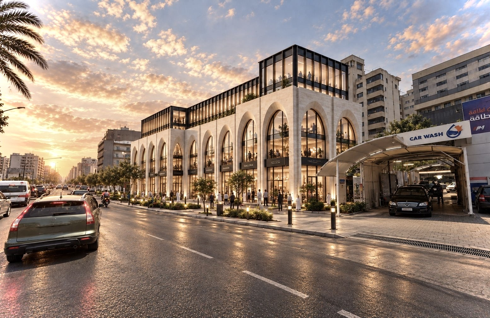
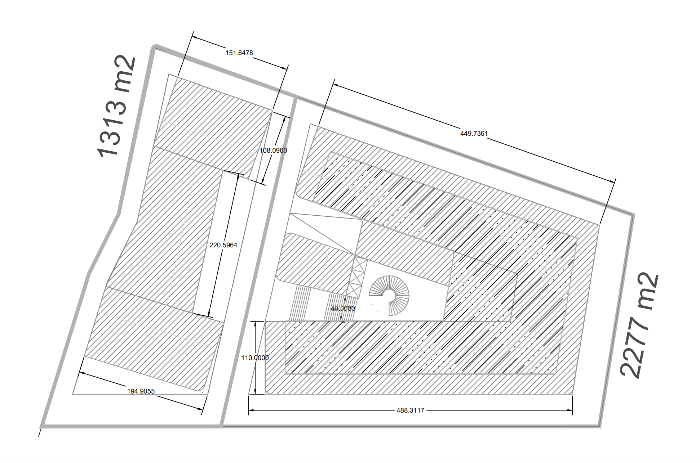
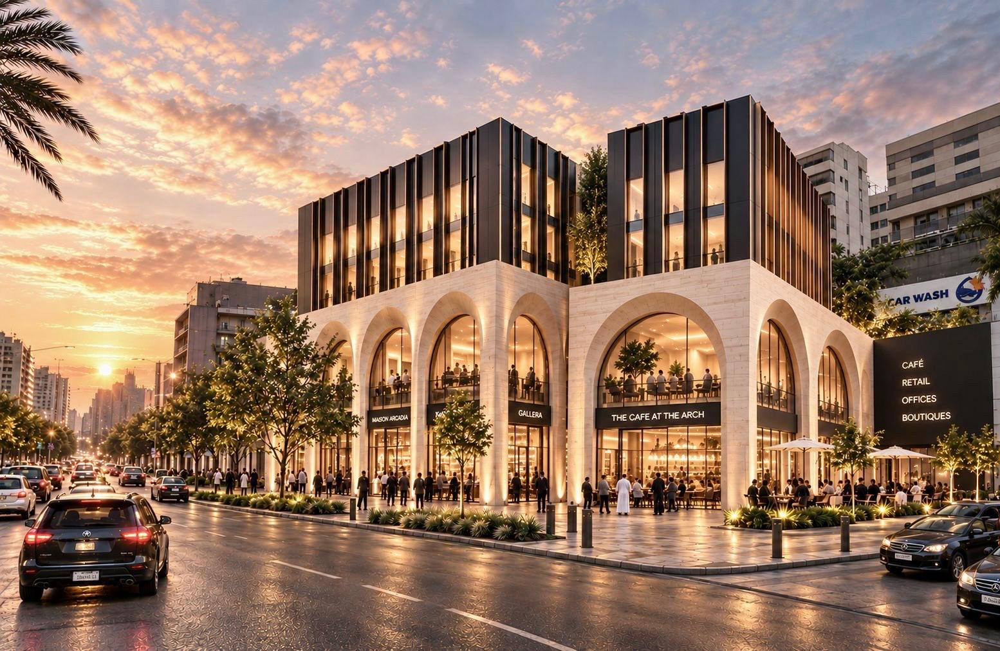
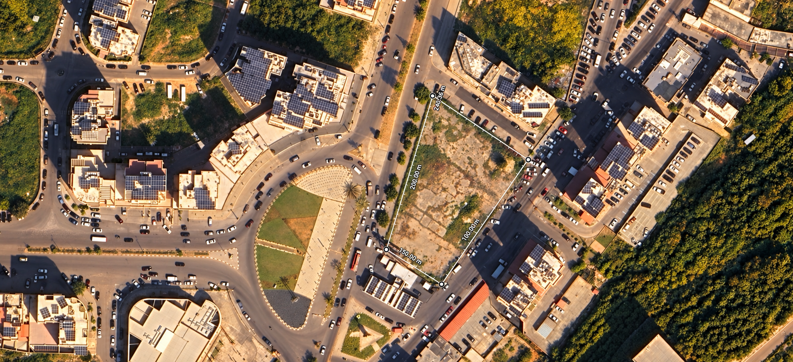

Larger plot
Architectural design, permits, execution design, visualizations and follow-up.

Architectural Design Services
Two adjoining plots · Mixed-use development · Basatine, Tripoli
Project proposition
This Professional Fee Offer and Preliminary Agreement is made between Mr Tarek Karame, the Client, and Arch. Mo Kabbara, the Architect. The appointment becomes effective when both parties sign and the Phase 1 payment has been received, unless otherwise agreed in writing.
The larger plot will be developed as the principal mixed-use project under the complete architectural scope. The smaller plot will receive a focused schematic concept intended to strengthen its market positioning and support a future land sale.
The smaller-plot concept will retain the architectural language, material logic, proportions and public-realm character of the larger project so that both sites read as a coherent urban composition.
Architectural design, permits, execution design, visualizations and follow-up.
Sales-oriented concept to attract buyers and demonstrate development potential.
The preliminary programme comprises three basement parking and service levels; ground-floor retail stores and showrooms; office accommodation; residential apartments; entrances, circulation cores, service spaces and landscaped external areas.


Planning basis

| Use | Basis | Indicative area |
|---|---|---|
| Ground-floor stores | 1 floor at 60% | 1,366.20 m² |
| Mezzanine | 40% of ground footprint | 546.48 m² |
| Offices | 2 floors × 910.80 m² | 1,821.60 m² |
| Residential floors | 3 floors × 910.80 m² | 2,732.40 m² |
| Top residential floor | Remaining FAR balance | 364.32 m² |
| Total built-up area | FAR check | 6,831.00 m² |
| Use | Basis | Indicative area |
|---|---|---|
| Ground-floor stores | 1 floor at 60% | 787.80 m² |
| Mezzanine | 40% of ground footprint | 315.12 m² |
| Offices | 2 floors × 525.20 m² | 1,050.40 m² |
| Residential floors | 3 floors × 525.20 m² | 1,575.60 m² |
| Top residential floor | Remaining FAR balance | 210.08 m² |
| Total built-up area | FAR check | 3,939.00 m² |
All areas and development capacities are preliminary assumptions. Balconies, walls, basements, exemptions, setbacks and authority requirements remain subject to official verification.
Scope of architectural services
All five phases apply to the larger plot. The smaller plot is limited to the coordinated schematic and sales-presentation work within Phase 1.
At the end of each phase, the Architect will issue the relevant package for review. One consolidated written Client response and written approval authorize commencement of the next phase.
Deliverables and responsibilities
Professional fee
Thirty-six thousand five hundred fifty United States dollars, exclusive of VAT and applicable withholding or statutory taxes.
Invoices are payable within seven calendar days. Work may pause after written notice of overdue payment. Payments for completed work are non-refundable. Additional services begin only after written approval.
Exclusions and principal terms
Specialist engineering and design services; bills of quantities and cost consultancy; tender administration and contractor procurement; continuous construction supervision; surveys and legal/title verification; authority and permit fees; printing, travel and accommodation; full interior packages, joinery, furniture procurement, branding, animation, website development and post-occupancy services.
Smaller plot: permit drawings, authority submissions, design development, execution drawings, detailed interiors, tender documents, construction coordination and site supervision are excluded.
Areas, height, coefficients and development potential are preliminary assumptions for defining scope and fee. They are not a survey, title opinion, permit approval, confirmation of legal development rights or construction guarantee.
An indicative programme will be prepared once the required information, consultant appointments and Client decision dates are confirmed. Authority and third-party delays extend the programme reasonably.
Material changes to plot information, programme, area, floor number or use, regulations, approved design, Client brief or authority requirements may require written scope, fee and programme adjustment.
Each specialist remains responsible for the adequacy, accuracy and compliance of their design. The Architect is not responsible for contractor workmanship, construction methods or departures from issued documents.
The Architect retains copyright and authorship. After full payment, the Client receives a non-exclusive licence to use the issued material solely for this project and site. Reuse or alteration requires written consent.
Either party may terminate with 14 calendar days’ written notice. Completed work, approved additional services and committed third-party costs remain payable. The Architect may suspend for overdue payment, unsafe conditions, unlawful instructions or prolonged inactivity.
Services will be performed with reasonable professional skill and care appropriate to the agreed scope and project stage. Approval, commercial result, construction cost and programme outcome are not guaranteed.
Email and signed electronic copies are acceptable. Amendments must be recorded in writing and accepted by both parties. A more detailed consultant agreement may replace this preliminary agreement by mutual consent.
The parties will first seek good-faith negotiation. The Agreement is governed by Lebanese law, with unresolved disputes referred to the competent courts of Tripoli.
Visual and technical appendix
Original attached PDF, retained as supplied.
Original attached PDF, retained as supplied.
Editable source offer and preliminary agreement.
Calculation tables for both plots.
Acceptance and signatures
By signing, the Client and Architect confirm acceptance of the scope, assumptions, exclusions, payment schedule and principal terms.
Before signing: complete contact details and signature dates. Each party should retain a signed copy and may obtain independent legal and tax advice.